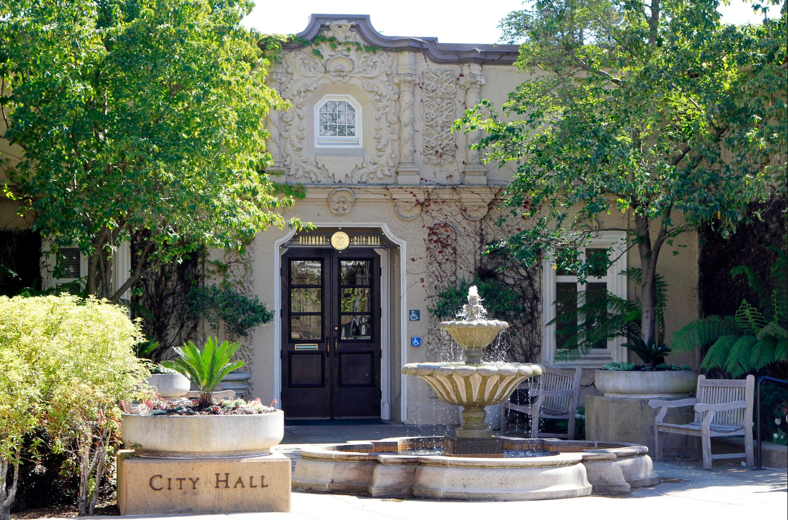

Home Page
Hi, Welcome! This is the homepage. On this your website you will learn more about me and also projects I have done.
Projects #1: Egg Drop Middle School
The Egg Drop most people probably know and I did this project in 6th grade with a group of friends. We did this project in our core classroom then all the groups would drop their mechanism off from up high and we would see who's mechanism protected the egg the best. We were restricted to a certain number of materials and of course banned from using certain materials.
Step 1: Design
Step 2: Build
Step 3: Test and change things accordingly
What we learned about the egg project was of course how to work as a group. We hadn't done to many group projects when we were younger so this project was helpful in teaching kids how to collaborate. I also learned design process and how to change items accordingly and to be innovative. We all created crazy contraptions that let out our creativity.
Project #2: Pinewood Derby Race
The Pinewood Derby was a Girl Scout project. The goal was to be able to create the fastest cars made out of wood with a set limitations. There was a certain weight limit meaning people couldn't just pile a bunch of weights on the back of the car. People would cut their wood and shape it into car then test it to see the speed.
Step 1: Design
Step 2: Build
Step 3: Test and change things accordingly
Step 4: After car is to your liking you paint it/decorate it
What people learned during this project was keeping it simple was usually the best way to go. People with the least complicated cars were usually the fastest while the cars that were elaborate and well decorated were slower.